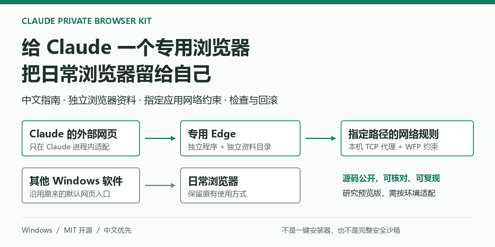
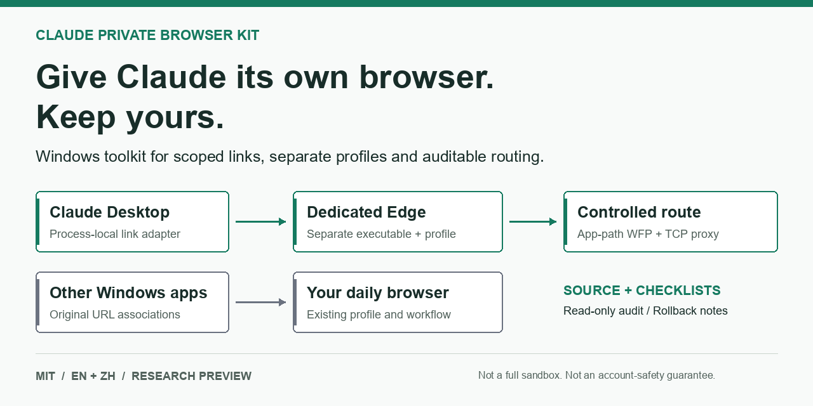

Claude 专用浏览器工具包
给 Claude 一个专用浏览器，把日常浏览器留给自己。
分清桌面端外部链接与 MCP 浏览器入口，为指定应用配置独立浏览器资料和网络路径，不替换 Windows 默认浏览器。
这是源码与验证文档，不是一键安装器。独立浏览器不等于完整安全沙箱，也不保证账号安全。
只改需要改的入口
外部网页，进入专用 Edge
进程内适配 Claude 打开的网页，日常软件保留原来的浏览器入口。
浏览器资料分开
独立程序与独立资料目录，不导入日常浏览器的 Cookie、密码或历史。
先检查，再部署
从只读检查开始，结合真实网络验收；明确改了什么，以及如何回滚。

先运行只读检查
git clone https://github.com/jiusi1-cpu/claude-private-browser-kit.git cd claude-private-browser-kit npm test npm run check:release node scripts/audit.cjs --config examples/audit.example.json
示例审计的预期结果：UNVERIFIED · 退出码 2
按问题找资料
先说清边界
配好了 MCP，为什么登录页还开在别的浏览器？
MCP 启动浏览器与桌面端打开外部网页是两条路径，需要分别适配和验收。现有证据没有证明登录后的真实 Claude 模型驱动 MCP 全链路通过。
能保证固定 IP、家宽或者不封号吗？
不能。出口性质与稳定性取决于你有权使用的上游服务，需要实际测量。本项目不提供账号或代理节点，不承诺隐藏所有地区信号。
适合完全没有技术基础的用户吗？
当前需要理解 Windows 配置并按环境适配。应用补丁有版本耦合和签名代价，浏览器副本要维护更新。全新机器完整部署尚未验证，不建议盲跑参考脚本。
Claude Private Browser Kit
Give Claude its own browser. Keep yours.
Separate desktop external links from MCP browser launches. Give selected applications their own browser data and network route without replacing the Windows default browser.
Source and verification documents, not a one-click installer. A dedicated browser is not a full sandbox or an account-safety guarantee.
Scope the change
A dedicated external-link route
A process-local adapter routes Claude's web links to a dedicated Edge, keeping the daily browser entry point unchanged.
Separate browser data
A separate executable and profile, without importing your daily cookies, passwords or browsing history.
Audit before deployment
Start with read-only checks, then test real network behavior. Keep changes inspectable and rollback explicit.

Start with read-only checks
Requires Git and Node.js 22 or newer. No npm dependency installation.
These commands do not change the system proxy, registry or firewall. Example paths return UNVERIFIED, not a passing environment.
Open the verification checklistgit clone https://github.com/jiusi1-cpu/claude-private-browser-kit.git cd claude-private-browser-kit npm test npm run check:release node scripts/audit.cjs --config examples/audit.example.json
Expected example audit: UNVERIFIED · exit code 2
Find the evidence
Know the limits
Why does the login page use a different browser from MCP?
MCP browser startup and desktop external-link handling are separate paths. Each needs its own adaptation and verification. The retained evidence does not establish an authenticated model-driven MCP workflow.
Does this guarantee a stable IP or prevent bans?
No. Exit properties and stability depend on your authorized upstream service and require measurement. This project supplies neither accounts nor proxy nodes, and makes no claim to hide every regional signal.
Is it ready for nontechnical users?
Not as a turnkey installer. Application patches have version and signature tradeoffs; the separate browser needs security updates. Fresh-machine deployment remains unverified. Review and adapt reference scripts before use.